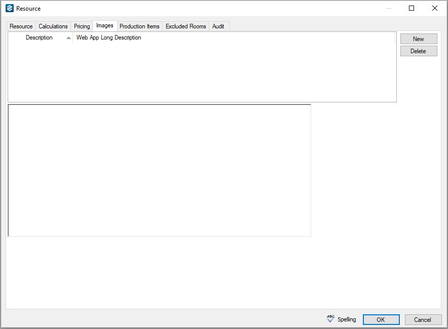

Resources (also called booking detail items) are the individual items or services that your users can reserve for an event. Resources are grouped by category. For example, a furniture category might contain tables and chairs as the resources.
Although you can use categories to track setup notes, meeting attendees, and activities for a booking, you do not configure resources for these categories. You must only configure resources for service categories.
This topic provides information to (tabs accessed through Configuration > Resources > select a category > New):
You can use the Resource Configuration Wizard to configure multiple resources that have common properties, such as grouping, account, and EMS Web App settings
To configure resources for a category, complete the following steps:
You must configure a category prior to configuring the resources for that category. See Configure Categories for more information.
The search string is not case-sensitive, but your search is limited to the exact order of the characters in the string and it must begin with the information for which you are searching. For example, a search string of Cold returns Cold Boxed Lunches, but not Sandwiches (Cold).
Resource Tab on the Resource Dialog Box
|
Field |
Description |
|---|---|
|
Description |
The name or description of the resource. The description can be a maximum of 50 characters, including spaces. Resource items are displayed alphabetically in EMS Desktop Client. As a result, when you are configuring a group of similar items, you might want to start the name of each with a common feature. For example, if you have black, white, and blue linens, a good way to name them would be “Linens, black,” “Linens, white,” and so on. |
|
Grouping |
If needed, select a grouping. If no groupings are available, or if the appropriate grouping is not available, you can always configure a grouping, and then edit the resource at a later date to place it in a grouping. |
|
Account |
Select the internal account which is to receive the revenue from the use of the resource. If the appropriate account is not available, you can configure it. |
|
Sequence |
Enter a number that determines the order in which the resource is displayed in a list with other resources in either EMS Desktop Client or EMS Web App. Resources are ordered from lowest to highest sequence number, with the resource with the lowest sequence number being displayed first. If you leave the sequence set to the default value of zero for all resources, then by default, the resources are displayed alphabetically. |
|
Select this option if the resource is to be a package. A package is a collection of related resources. See Also: Create a Package for a Resource. |
|
|
Use Package Item Prices |
Available only if Package is selected. Select this option if the package price is to be the sum total of the prices for the individual resources that make up the package; otherwise, you can define a different price for the package on the Pricing tab. See Also: Configure Pricing for a Resource. |
|
Select this option to allow your EMS users to edit the description when they are adding it to a booking. A common use for this feature is to configure a resource called “Other” for each of your resource categories which users can rename to whatever non-inventory item is needed when they select it. |
|
|
Maintain Inventory |
Select this option if you have a limited number of this item and you want EMS to notify your users when they attempt to overbook it. |
|
Quantity Available |
Available only if you select Maintain Inventory. Enter the number of resource items of this type that your organization has in its inventory. |
|
External Reference |
Links the resource to an outside program if needed. |
|
Internal |
Indicates that the resource is internal to your organization. Used for internal reporting purposes only. The resource is not printed on external documents such as confirmations and invoices, and it is not hidden in any area of your EMS application. |
|
Available only if the category to which you are adding the resource has been designated as using production items. Select this option if this resource item is to be a production item. See Also: Define Production Areas and Production Items for a Catering Resource and Edit Production Items. |
|
|
Serves |
The number of users that can be served by the resource. For example, one lunch buffet might serve ten people. |
|
Min. Quantity |
The minimum quantity required when selecting the resource. |
|
Alert |
Enter a message that is to be displayed when a user adds the resource to a booking in the |
|
Notes |
Any other additional information that is pertinent to the item itself, the use of the item, and so on. Notes displayed in EMS and EMS Web App are printed on confirmationsconfirmations and the Setup Worksheet reportSetup Worksheet report. |
|
|
|
|
Available to Everyday Users |
To have this resource be an available option for EMS Web App users who select this category, leave Available on Web selected. Not available if Override Description is selected (see Override Description above). |
|
Available at Checkout |
Select this option if you want the resource to be displayed on the “checkout” page (the last page in the Room Request process) in EMS Web App. Not available if Available to Everyday Users is not selected. |
|
Hide Special Instruction |
Do not show any special instructions for the resource in EMS Web App. |
|
Display Alert to Everyday Users |
If an alert has been configured for the resource, then display this alert when a user adds this resource to a booking in EMS Web App. |
You can click Spelling to spell check the information that you entered for the resource before you save it.
Once you have finished configuring the resource, click OK to close the Resource dialog box and return to the Resources window. The newly configured resource is automatically selected in the window.
After you have configured the resource, you can do the following:
You can assign calculations at the category level, too. If you have already assigned calculations to a resource’s category, then these calculations are automatically applied to new resources for the category. These calculations are displayed in the Selected list after you click OK and save the resource.
From the Calculations tab on the Resource dialog box, you can assign calculations to a resource as follows:
Calculations Tab on the Resource Dialog Box
You can also configure the resource price on the Edit Pricing window or when you are configuring rate schedules.
From the Pricing tab on the Resource dialog box, you can configure pricing for a resource as follows:
Pricing Tab on the Resource Dialog Box
|
|
Description |
|---|---|
|
Half Day/Full Day (Event Time) |
The total number of hours for the event is counted and then compared to the number of hours that is indicated in the Hours column. If the total number of hours for the event is less than or equal to the hours that are indicated in the Hours column, then the Half Day price is charged for the resource. If the total number of hours for the event is greater than the hours that are indicated in the Hours column, then the Full Day price is charged for the resource. |
|
Half Day/Full Day (Reserved Time) |
The total number of hours for the reservation (event time and reserved time) is counted and then compared to the number of hours that is indicated in the Hours column. If the total number of hours for the reservation is less than or equal to the hours that are indicated in the Hours column, then the Half Day price is charged for the resource. If the total number of hours for the reservation is greater than the hours that are indicated in the Hours column, then the Full Day price is charged for the resource. |
|
|
The total number of hours for the service time is counted and then compared to the number of hours that is indicated in the Hours column. If the total number of hours for the service time is less than or equal to the hours that are indicated in the Hours column, then the Half Day price is charged for the billable item. If the total number of hours for the service time is greater than the hours that are indicated in the Hours column, then the Full Day price is charged for the billable item. This pricing method is only available for a resource with a service order. |
|
Hourly (Event Time) |
The price that is indicated in the Price column is multiplied by the event time (in hours) for the booking. This price can be used in conjunction with an initial “flat” fee, as well as minimum and maximum fees. |
|
Hourly (Reserved Time) |
The price that is indicated in the Price column is multiplied by the reserved time (in hours) for the booking. This price can be used in conjunction with an initial “flat” fee, as well as minimum and maximum fees. |
|
Hourly (Service Time) |
The price that is indicated in the Price column is multiplied by the This pricing method is only available for a resource with a service order. |
|
Hourly (Specific) |
The price that is indicated in the Price column is multiplied by the number of hours indicated when adding the resource to a booking. |
|
Unit |
The price that is indicated in the Price column is applied to the resource, regardless of the event time or reserved time for the booking. |
|
Field |
Description |
|---|---|
|
Price |
The dollar amount that is used in calculating the resource price for a booking. If the pricing method is Unit, then this value is applied in total to a resource, regardless of the event time or reserved time for the booking. |
|
Discount |
You can use a discount with any pricing method. If you specify a discount for a resource, then the actual price, the discount percentage, and the discounted amount are displayed on confirmations and invoices. |
|
Min. Charge Max. Charge |
The values that are indicated in these columns are used in conjunction with the Hourly pricing methods. If you specify a minimum charge for a resource, then the system compares this value to the calculated hourly rate and applies the greater of the two charges. Likewise, if you specify a maximum charge for a resource, then the system compares this value to the calculated hourly rate and applies the lesser of the two charges. |
|
Flat Price |
A resource price that remains constant regardless of the total number of hours booked for the resource. Used in conjunction with Hourly (Event Time) and Hourly (Reserved Time). |
|
Half Day Price |
The dollar amount that is used in calculating the resource price for a booking if the pricing unit is Half Day/Full Day (Event Time) or Half Day/Full Day (Reservation Time). |
|
Full Day Price |
The dollar amount that is used in calculating the resource price for a booking if the pricing unit is Half Day/Full Day (Event Time) or Half Day/Full Day (Reservation Time). |
|
Hours |
Multiplier used in calculating the resource price for a booking if the pricing unit is Half Day/Full Day (Event Time) or Half Day/Full Day (Reservation Time). |
From the Images tab on the Resource dialog box, you can associate an image with a resource if the image is in one of the following formats—.gif, .jpeg, .jpg, .bmp, .wmf, or .png and ideally, it should not be larger than 615 x 350 pixels. If you attach an image larger than this, you might not be able to view the image without scrolling. Any images that you associate with the resource are

Images Tab on the Resource Dialog Box
The Production Items tab lists all the production items that have been defined in your EMS database (see also: Define Production Areas and Production Items for a Catering Resource).
The Production Items tab is available only if you did NOT select Production Item on the Resource tab when you were configuring the resource.
Production Items Tab on the Resource Dialog Box
This feature prevents a resource from being allocated for a specific room.
Excluded Rooms Tab on the Resource Dialog Box
A package is a group of resources. You can combine a list of related resources into a package to streamline booking. For example, an Instructor A/V package might include a laser pointer, a mobile microphone, and a flip chart. You select the items for a resource package on the Package Items tab on the Resource dialog box. You can set the price for a package to be the sum total of the individual resources that make up the package, or you can set an independent price for the package.
The Package Items tab is available only if you select Package on the Resource tab when you are configuring the resource.
Package Items Tab on the Resource Dialog Box